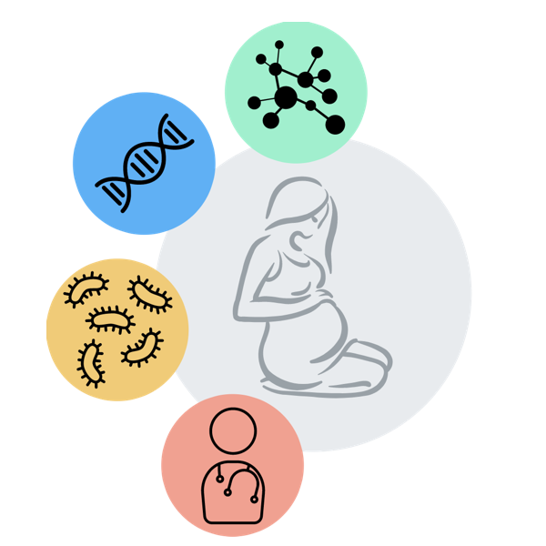
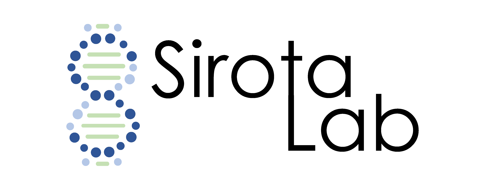

|  |
Leveraging Omics and Clinical Data To Advance Preterm Birth Research Each year, 15 million babies (representing 10% of the world’s births) are born preterm, defined as before the 37th week of gestation. Survival for most children born preterm has improved considerably, but surviving children remain at increased risk for a variety of serious complications, many of which contribute to lifelong challenges for individuals and their families, as well as to burdensome economic costs to society. The exact mechanism of spontaneous preterm birth is unknown, though a variety of social, environmental, and maternal factors have been implicated in its cause. In the Sirota Lab, we are in particular interested in applying computational integrative methods to investigate the role of the immune system in pregnancy and elucidating genetic, environmental and clinical determinants of preterm birth. We have created several data visualizations of or recent analysis including transcriptomics, genomics, and microbiome that you might find useful.  |
|---|